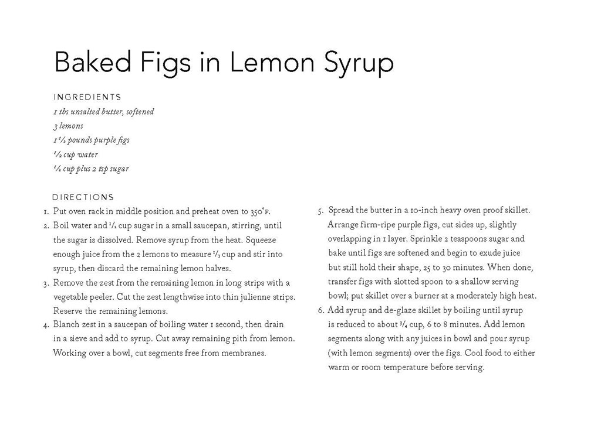

Baked Figs in Lemon Syrup
Ingredients
- 1/2 cup water
- 3 lemons
- 1/2 cup and 2 tsp sugar
- 1 tbs unsalted butter
- softened 1 1/2 pounds purple figs
Directions
- Put oven rack in middle position and preheat oven to 350 degrees ℉
- Boil water and 1/2 cup sugar in a small saucepan, stirring, until the sugar is dissolved. Remove syrup from the heat. Squeeze enough juice from the 2 lemons to measure 1/3 cup and stir into syrup, then discard the remaining lemon halves.
- Remove the zest from the remaining lemon in long strips with a vegetable peeler. Cut the zest lengthwise into thin julienne strips. Reserve the remaining lemons.
- Blanch zest in a saucepan of boiling water 1 second, then drain in a sieve and add to syrup. Cut away any remaining pith from lemon. Working over a bowl, cut segments free from membranes.
- Spread the butter in a 10-inch heavy oven proof skillet. Arrange the firm-ripe purple figs, cut sides up, slightly overlapping in 1 layer. Sprinkle with remaining 2 teaspoons sugar and bake until figs are softened and begin to exude juice but still hold their shape, 25 to 30 minutes. When done, transfer figs with a slotted spoon to a shallow serving bowl and put the skillet over a burner at a moderately high heat.
- Add syrup and de-glaze skillet by boiling until syrup is reduced to about 3/4 cup, 6 to 8 minutes. Add the lemon segments along with any juices in bowl and pour syrup (with lemon segments) over the figs. Cool the food to either warm or room temperature before serving.
Next Recipe